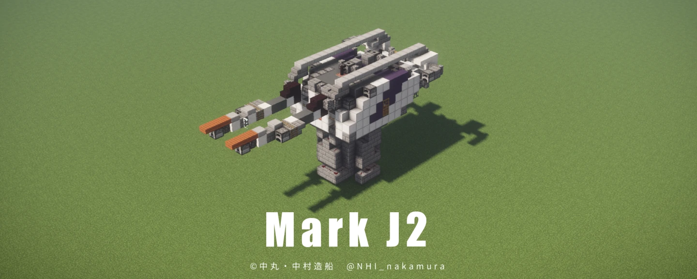

Mk.J2 連装砲
巡洋艦と駆逐艦の主砲として、また戦艦の副砲として広範囲で運用される、ベストセラー連装砲
解説
開発経緯
本砲は藍な級巡洋艦への搭載を前提に開発された。連装砲として最も小型となるよう、砲間3ブロックを目指して開発した。
また、全周水流装甲などの基本的な装甲も搭載し、本砲と同じレベルの攻撃に3発程度耐える防御力を目指した。
構造
本砲は大型砲塔兵装に分類される。砲塔上部にTNTカートキャノンを連装に架装する。砲塔下部は船体からの信号を受けとる、共通3ピン入力端子がある。
攻撃
弾頭数は片側である。小型化を優先し、攻撃力は二の次となっている。装薬起爆方式は一般的な半没式、かつ弾頭チャンバー高は二ブロックである。
mk.j1型では弾頭飛距離が極端に短くなる設計ミスがあったが、本砲ではチャンバー形状の変更により改善した。
防御
全周水流装甲の効果を高めるため、砲口閉鎖機構を採用している。また、砲身を砲塔背面に繋げ、水流装甲を妨げない構造となっている。